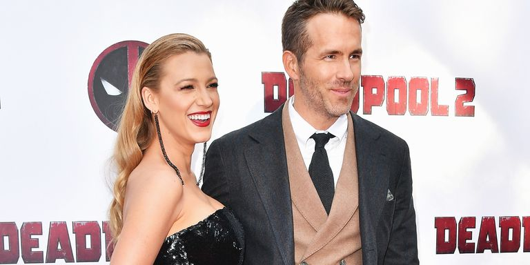

Vesti
Ryan Reynolds i Blake Lively savršeni na premijeri Deadpool 2
Blake Liveli i Rian Reinolds nastavljaju da osvajaju svoja srca iznova i iznova sa svakom javnom pojavom sa kojom nas blagoslovljuju. Par je napustio 14. maja da proslavi premijeru Rianovog filma Deadpool 2, a imali su samo oči jedni za druge. Dok smo navikli da se sami nasmijamo preko Blake-a i Rian-ovih komentatora iz socijalnih medija, izgleda da su par proveli razmenu privatnih viceva IRL-a na crvenom tepihu. Samo pogledaj Riana šapat u uhu - naša srca, rastopaju. Čak su bili uhvaćeni u njihovim potpisnim parovima (pozvali su jednog dole pre nego što su počeli da daju)! Nastavite da se pomerate da vidite više slika duoove noći i slobodno se sećate dana kada su se prvi put zaljubili.
Infinity War Premijera

Chadvick Boseman, svež "Black Panther", Avengers, Robert Dovnei Jr., Scarlett Johansson i Mark Ruffalo, kao i nove Marvelove predstavnice Tom Hollanda i Evangeline Lilli, koji će ove letove "Ant Man i Vasp" "Bili su prisutni među superherojima. Duga lista zvezda koji su hodali po tepihu da bi se upoznali sa navijačima, uhvatili kolege članova i odgovorili na pitanja novinara odložili su početak skrininga za skoro sat vremena, ali niko nije imao problema. Premijera je bila među najsigurnijim i sigurnim događajima Disnei-a u novijoj memoriji, sa velikim perimetrom oko Holivudskog bulevara, koji je bio zatvoren ispred Hollivooda i Highland centra. Učesnici su mogli da vide da je film bio na tri različita ekrana, uključujući jedan u Dolbi Teatru. Ljubičasti tepih je ispružio gotovo čitav blok i predstavio kostime i druge spomenike iz Marvel Cinematic Universe. Ventilatori su takođe učinili svoje najbolje cosplais, dolazeći obučeni poput Super-Man, Dr. Strange i Black Vidov, između ostalog.
Zašto je Christopher Nolan "molio" Tom Hardija da glumi u "Dunkirku"

Pisac / režiser Christopher Nolan nije napisao deo nemogućeg nesposobnog pilota Farriera u Dunkirku sa jednim akterom na umu. Ali kada je Nolan to napisao, znao je da bi mogao biti samo jedan glumac koji će igrati Farriera za akcijski triler u pozorištima sada: Tom Hardi. "Ne pišem sa akterima na umu, jer mislim da ih donekle čini lošim uslugom", kaže Nolan. "Ali kada je to učinjeno, mogao sam da vidim samo Tom, pa sam ga nazvao i molio ... na dostojanstven način." Nolan je znao da će Hardi u najvećoj meri iskoristiti deo sa nekoliko reči ili fizičkog pokreta dok se u kokpitu Spitfire - uključio u borbe sa borcima nemačkih Messerschmitt Bf 109 tokom bitke kod Dunkirka. Zašto je 'Dunkirk' obavezan IMAKS gledanje: Straight Up Hollivood podcast "Mi smo u tom kokpitu sa njim za ceo film, tako da se radi o brisanju znoja iz njegovih očiju ili bilo čega, vrlo je mala. Dvije stope oko njega, znao sam (Hardi) da bi to bilo zainteresovano, "kaže Nolan. "Retko je to pronaći i prihvatiti to ograničenje, vezujući mu ruku oko njegovih leđa i naterajući ga da uradi nešto drugačije, znao sam da će imati nešto neverovatno da dovede do toga." 'Dunkirk': Kako istorijski tačni borbeni film Hrista Nolana iz Drugog svetskog rata? Nolan je istakao performanse u filmu Locke za 2014. godinu, u kojem je prikazan lik Hardi-a snimljen u vozačevom sedištu automobila koji govori na svom mobilnom telefonu, kao primer sposobnosti glumca da savlada mali prostor. Farrier ima i pilot masku za kiseonik oko njegovih usta za veliki deo filma, ostavljajući pažnju gledatelja na Hardi-u potpuno izražavajućim očima - slično kao Hardi-jeva zlobna Bane u Nolan-u The Dark Knight Rises. "Imao sam sjajno iskustvo sakrivajući Toma iza maski i pokazujući da može djelovati samo svojim očima", kaže Nolan. "Sve je tu, on ima najizražajnije oči. On može da izvuče publiku u trenutak na neverovatan način čak i sa većim delom njegovog lica."